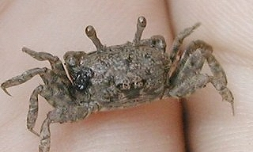

|
|
|
學名 |
Tmethypocoelis
ceratophora |
 |
|
雄蟹前端尖尖的 |
|
 |
|
雌蟹眼柄前端 則無尖尖的特徵 |
|
|
命名者 |
(Koelbel, 1897) |
|
中文名 |
角眼拜佛蟹 |
|
科名 |
沙蟹科Ocypodidae |
|
棲息環境 |
潮間帶沙泥地排水良好 |
|
棲息潮位 |
中高潮位 |
|
俗名 |
切腹蟹、拜佛蟹 |
|
最大體長 |
雌（ 1.5 ）
雄（ 1.5 ）公分 |
|
主要分佈 |
挖仔尾、竹圍紅樹林外側潮間帶 |
|
洞口密度 |
12
/平方公尺（與白扇同一棲地） |
|
洞口特性 |
洞口寬約0.3～0.5公分有堆置狀泥沙 |
|
型態特徵 |
特徵、習性：
蟹長1.2—1.5公分，是潮間帶少數的小形蟹種之一，在挖仔尾地區，
五、六月份常見的蟹類。背甲長方形，眼柄長、雄蟹前端尖尖的。雌蟹眼柄前端
則無尖尖的特徵，雄蟹螯掌節扁平、寬大，雌蟹螯腳較細小。螯掌節、指節 呈灰色或土色，其餘為泥土色。
甲寬僅一公分左右。雄蟹眼球頂端具一角狀突起，雌蟹則無。掘穴群居於河口及紅樹林沼澤泥灘地。雄蟹揮螯行為像回教徒朝拜真主一樣，為野外觀察時辨識重點。潮間帶很多螃蟹都有揮舞雙螯的行為，不同的蟹類會有不同的揮舞方式。即使同種螃蟹也因示威、求偶等因素，所表現的揮舞行為也會不一樣。 |
|
特殊習性 |
角眼拜佛蟹有揮動螯的習性，尤其雄蟹最多。有內往外反覆的動作，有如拜拜。 |
|
觀察重點 |
揮螯動作，公母蟹的別 |
|